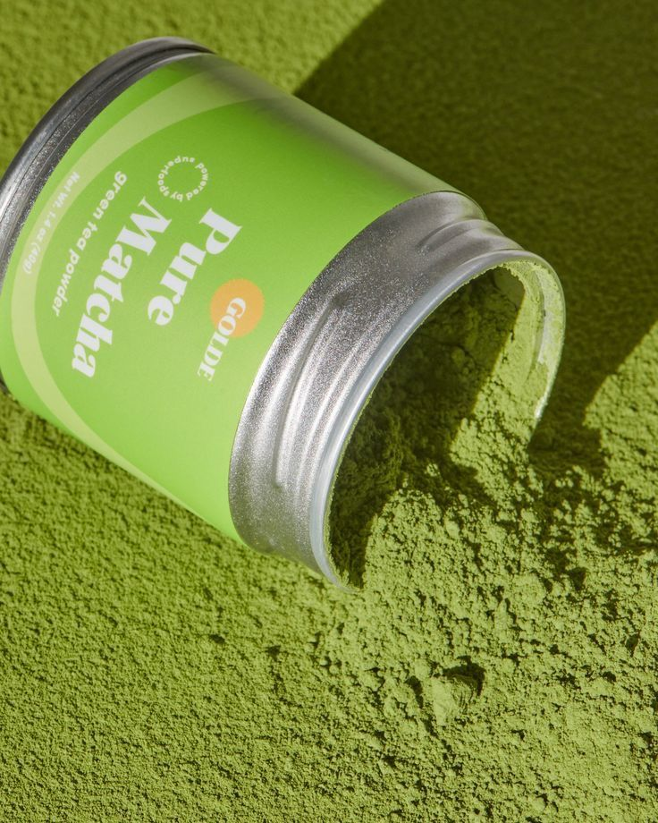

I am 19 years, 6 months, and 4 days old.
My favorite color is sea blue, and I like matcha.
That’s why the theme of my article is about matcha.
MY HOBI
Watching drama
Hiking
Travelling
Knit
MY ARTICLE

Kandungan Gizi Matcha
Matcha, bubuk teh hijau asal Jepang yang telah menjadi tren global,
bukan hanya populer karena rasanya yang unik dan warna
hijaunya yang menarik, tetapi juga karena kandungan gizinya
yang luar biasa. Berbeda dari teh hijau biasa, matcha dibuat
dari daun teh (Camellia sinensis) yang ditanam secara khusus dan
digiling halus, sehingga seluruh daun dikonsumsi dalam bentuk
bubuk. Inilah yang menjadikan matcha lebih unggul dari segi
gizi dan manfaat kesehatan.
Matcha kaya kan berbagai
nutrisi penting dan senyawa bioaktif, diantaranya:
Antioksidan Tinggi(EGCG)
Matcha mengandung epigallocatechin gallate (EGCG),
antioksidan kuat yang dapat membantu melawan radikal
bebas, mengurangi peradangan, dan mencegah kerusakan
sel.
Kandungan antioksidan matcha disebut-sebut
137 kali lebih tinggi dibanding teh hijau
biasa.
Kafein dan L-Theanine
Matcha mengandung kafein, tetapi dalam jumlah yang
lebih stabil dan seimbang, menghasilkan energi yang
lebih tahan lama.
Bersamaan dengan itu, L-theanine, asam amino yang
unik dalam teh, membantu memberikan efek menenangkan
dan meningkatkan fokus tanpa rasa gelisah seperti yang
biasa muncul dari konsumsi kafein.
Vitamin dan Mineral
Matcha mengandung berbagai vitamin seperti
vitamin A, C, E, K, serta vitamin B-kompleks.
Mineral penting seperti
potasium, kalsium, magnesium, dan zat besi juga
hadir dalam matcha, walaupun dalam jumlah sedang.
Serat
Karena dikonsumsi dalam bentuk daun utuh, matcha mengandung
lebih
banyak serat dibanding teh hijau seduhan, yang
membantu pencernaan dan pengendalian gula darah.
Matcha juga memiliki manfaat bagi kesehatan ,yaitu:
Meningkatkan Energi dan Fokus
Matcha mengandung kafein yang memberikan energi, namun tidak menyebabkan
gelisah seperti kopi karena ditopang oleh L-Theanine, yang memberi efek tenang
dan fokus. Kombinasi ini membantu meningkatkan konsentrasi dan kewaspadaan
secara alami.
Menangkal Radikal Bebas
Kandungan antioksidan EGCG dalam matcha sangat tinggi, bahkan
lebih dari teh hijau biasa. Antioksidan ini membantu mencegah kerusakan sel,
memperlambat penuaan, serta mengurangi risiko penyakit kronis seperti kanker,
diabetes, dan penyakit jantung.
Mendukung Penurunan Berat Badan
EGCG juga dapat membantu meningkatkan metabolisme tubuh, membakar kalori
lebih cepat, dan mengurangi penumpukan lemak. Oleh karena itu,
matcha sering digunakan sebagai bagian dari program diet sehat.
Detoksifikasi Alami
Kandungan klorofil dalam matcha membantu mengeluarkan racun
dari tubuh, khususnya logam berat dan zat berbahaya lain.
Ini juga bermanfaat untuk menjaga kesehatan hati.